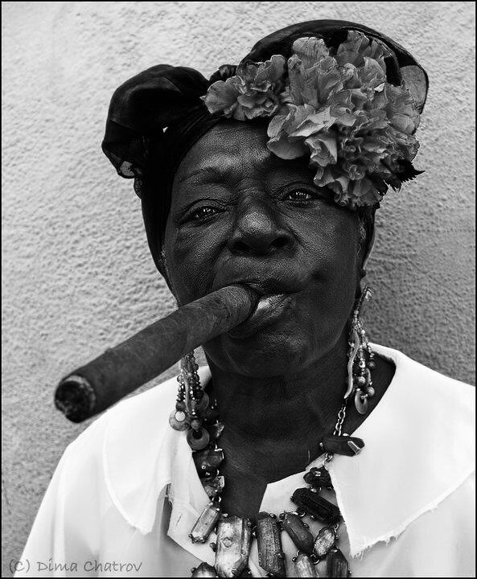

Ela não sorri — ela impõe.
O charuto entre os lábios e as flores na cabeça não são enfeites: são declarações.
Essa mulher carrega a força ancestral das ruas, a espiritualidade que pulsa entre o asfalto e o sagrado.
Sua presença é realeza periférica, onde cada ruga é um capítulo de resistência e cada detalhe estético é escolha e afirmação.
Nessa imagem, o feminino não é suavidade, é potência.
Ela representa as vozes que vieram antes, que ainda ecoam, que seguem firmes — mesmo quando o mundo insiste em silenciar.